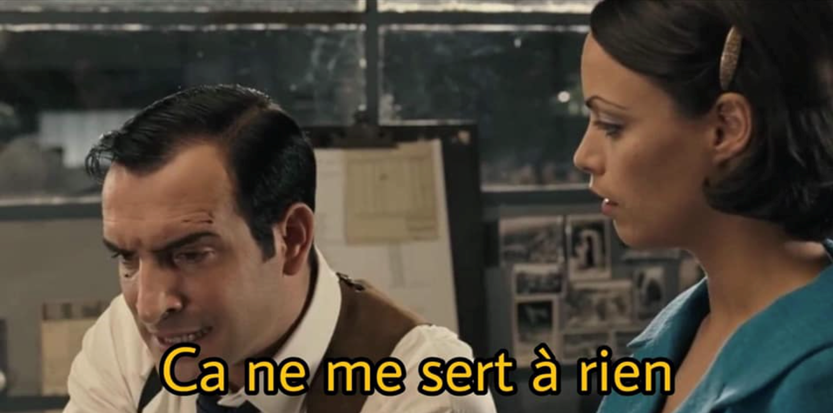
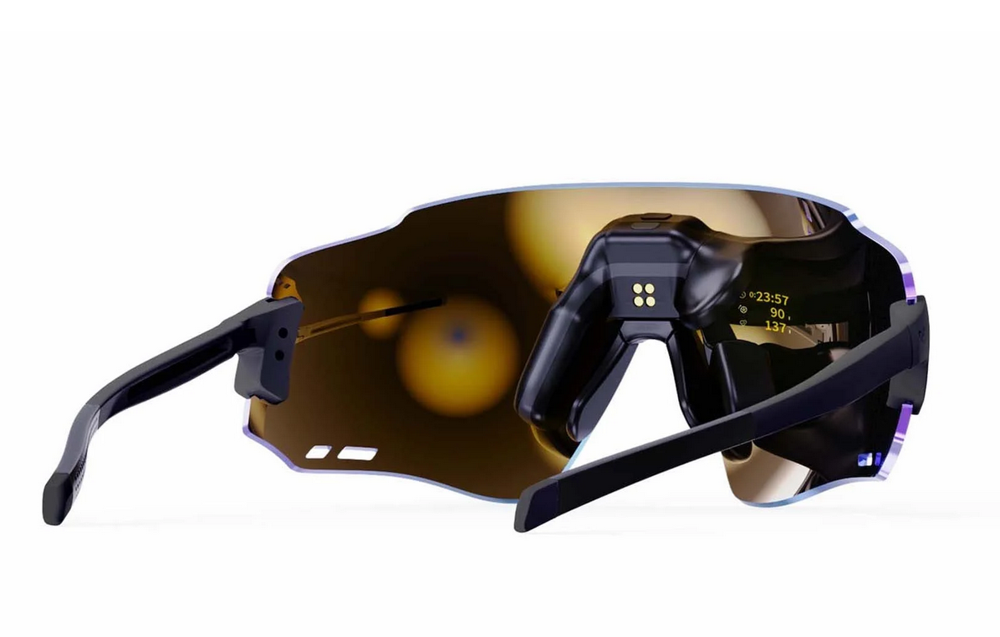
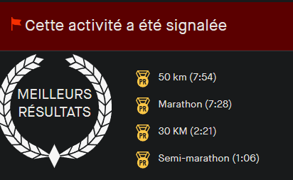
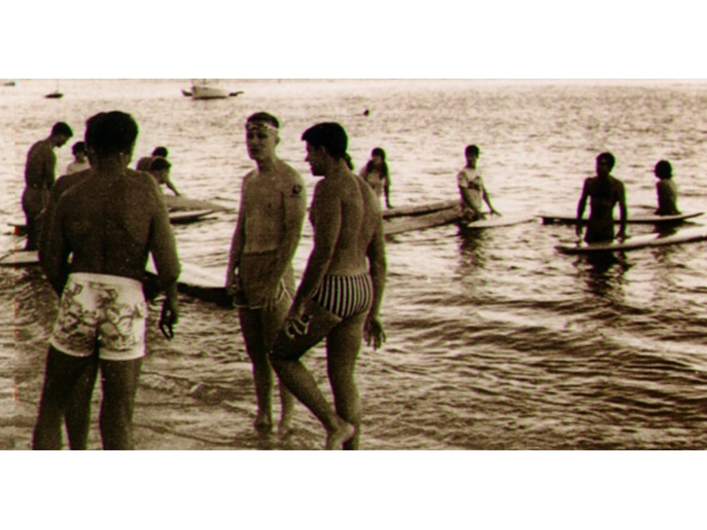

Previous slide Next slide Toggle fullscreen Open presenter view
Le triathlon de la data sportif
Agenda -
Capture (3
Analyse (13
Les informations fournies par ces capteurs
Exploiter (27
Les interprétations de ces informations
Conclusions (4 Démo et code (Si il reste du temps)
Le triathlon de la data sportif
Whoooo are you hoowouuh
Sportif depuis 40 ans
Triathlète depuis un peu plus de 10 ans
~200 courses réelles et virtuelles, toutes disciplines confondues
Course à pied, cyclisme, natation, trail, triathlon, golf, tir et autres trucs chelou
Codeur depuis 45 ans
DEA informatique théorique
25 ans dans l'industrie
20 ans à
Beta test et/ou contributeur de Zwift, Garmin, Engo, Form, Runalyze, Smashrun, Wahoo, Decathlon, etc..
Le triathlon de la data sportif
Capture
Le triathlon de la data sportif
Les capteurs communs
Temps !
Fréquence cardiaque
Positionnement (GPS …)
Accéléromètre / Gyroscope
Baromètre
Oxymètre
Le triathlon de la data sportif
Les capteurs avancés
ECG
Thermomètre
Puissance/couple
Pression
Glycémie
Tensiomètre
Contacteurs
Le triathlon de la data sportif
Les capteurs "exotiques"
Luminosité
UV
Lidar
Radar
Photos/Vidéos
Balance (Poids, masse hydrique, masse osseuse, etc...)
Le triathlon de la data sportif
Analyses
Le triathlon de la data sportif
La fréquence cardiaque
Contexte de capture
Course à pied, vélo, natation
Sommeil
Fréquence d’échantillonnage
Type
FCMax, FCRec, Variabilité cardiaque (VFC)
Le triathlon de la data sportif
Le positionnement
Contexte de capture
Course à pied, vélo, natation
Fréquence d’échantillonnage
L'ajout de capteurs correctifs/amélioratifs
altimètre
baromètre
podomètre
Cartes (navigation, retour maison ...)
Le triathlon de la data sportif
Capteur de puissance
Watts
Puissance spécifique W/kg
L’équivalent du cardio mais pour le vélo
advan.00078.2011
Le triathlon de la data sportif
Vitesses électriques
Shimano (filaire)
SRAM (sans fils)
Position du plateau, des pignons
Ratio
Le triathlon de la data sportif
Radar vélo
Garmin, iGP, Wahoo, Sigma
Pour la sécurité
Changement de l’éclairage
Détection des véhicules et leur type
Détection des vitesses des véhicules
Le triathlon de la data sportif
Capteur Glycémie
Le triathlon de la data sportif
Oxymètre
Le triathlon de la data sportif
Capteur Sueur
Le but étant de minimiser la perte hydrique et minérale/électrolytes (majoritairement sodium, potassium, magnésium, zinc)
Limite d'absorption (à l'effort) ~ 400/500ml/h
Santé (Crampes, Nausées, Confusion)
hdroptech Gatorade GX Sweat Patch
Le triathlon de la data sportif
Capteur température
Le triathlon de la data sportif
Capteur de pression
Pression suspensions
Pour le confort (et la perf)
Pression pneus
Pour la sécurité (et la perf)
Traînée Aérodynamique en temps réel
Multiples capteurs (dont pression de l'air)
Optimisation pour les pros
Le triathlon de la data sportif
Exploitation
Le triathlon de la data sportif
Le journal d’entraînement (Training log)
Papier
En ligne
Application
Le triathlon de la data sportif
Le triathlon de la data sportif
Certaines métriques sont subjectives et/ou manuelles
Très facile -> très difficile
Sensation : Horrible -> très fort
Age, Poids
C’est très subjectif et sujet à interprétation voire erreur.
Les algorithmes utilisés sont parfois publics, parfois sous licence, et souvent secrets.
Produits par la recherche mais aussi les plateformes et les constructeurs (d’où leurs propres plateformes)
Le triathlon de la data sportif
Résultats

Le triathlon de la data sportif
Analyse Cardio - Prédiction de course
Multiples méthodes (Dave Cameron, Pete Riegel, Robert Bock (CPP), Herbert Steffny)
Avec multiples métriques (FCMax, FRec, courses précédentes, etc.. )
Le triathlon de la data sportif
Analyse Cardio - Vo2Max
Vo2Max = La consommation maximale d'oxygène que l'organisme peut absorber lors d'un effort physique intense
En réalité -> Prédiction de Vo2Max
L'algorithme de calcul -> Firstbeat, secret déso
Le triathlon de la data sportif
Test Vo2Max
Le triathlon de la data sportif
Uniquement écran déporté
Aucun capteur
enfin si, capteur de luminosité pour ajuster l'écran, mais aucune data produite

Source : https://fr.engoeyewear.com/produits/engo-2
Le triathlon de la data sportif
Capteurs classiques (gyros, mouvements)
Combinaison avec des capteurs existants
Depuis la montre
Depuis un capteur externe (cardio)
Autorisée en compétition !
Le triathlon de la data sportif
Photos et vidéos
Positionnement
Sur le vélo
Natation
Golf
Confort
Optimisation de l'aéro
Synchronisation avec les capteurs aéro
Le triathlon de la data sportif
Cartes thermique (HeatMap)
Les routes/chemins les plus empruntés/validés et sécurisés
Utilisation des données des radars/lidars
HeatMap Nuit, pour les routes sûres/pratiques la nuit
Nouvelle HeatMap contextualisée
Source
Le triathlon de la data sportif
HeatMap
Le triathlon de la data sportif
Le triathlon de la data sportif
Des data pour la recherche
Vitesse ajusté à la pente, age, température
Le triathlon de la data sportif
Des data pour le virtuel - Zwift
Le triathlon de la data sportif
L’empoisonnement des données
Involontaire/Volontaire
Erreurs GPS, Bug de traitement, Bug d'upload
Vélo à la place de course à pied ...

Nettoyage par "IA" sur Strava cet été
Le triathlon de la data sportif
L'empoisonnement pour tricher
Le triathlon de la data sportif
Fun
Faire de jolis dessins
(Pour l'instant) Fait artisanalement
eSport
Cardio, stress
Garmin GameOn
Le triathlon de la data sportif
Conclusions
Le triathlon de la data sportif
Évolution des capteurs
Bientôt (quelques mois)
Température peau + corps (avec capteur dédié)
Glycémie (avec capteur cardio)
Tension (avec capteur cardio)
Le triathlon de la data sportif
Évolutions des analyses/exploitations
Quelques années (pour le grand public)
Morphologique
Physiologique
Métabolique
Exemple : Analyseur de quantité de mitochondrie
Organite utilisant l'oxydation du glucose et des acides gras pour produire de l'ATP. (= énergie)
Optimisation des apports des nutriments.
Le triathlon de la data sportif
Résumé
Capteurs
Toujours plus mais attention au contexte
Analyse
Le contexte et les combinaisons qui peuvent entraîner des biais
Exploitation
Souvent marketing, pour la performance
Parfois pour la recherche
Le triathlon de la data sportif
Pour vous
Pour apprendre à se connaître
Retour immédiat, correction et validation
Pour la santé/sécurité
Surveillance, informer, alertes
Les pro
La naissance du triathlon

* Enregistrement si ca marche ?
50 min de talk
40 min de presentation
3 Axes
* le matériel, les capteurs utilise
* les data que ces capteurs nous fournisse
* Comment et pourquoi les montres, plateformes utilisent ces donnes. Et ce que nous pouvons en tirer, ou les exploiter
* Utilisation personnelle
* Exploitations marketing
* Et en dernière partie, on regardera un peu de code dans ce sens.
* https://github.com/zRenard/zRenardWatch
* https://github.com/zRenard/ObjectivesWidget
* eSport App
* Ceinture (électrique), optique
* GPS (US), Galileo (EU), Beidou (CH), Glonass (RU), QZSS (JP)
* Source : https://filieresport.com/fr/telechargements?k=24166577&u=%2Fsante-et-bien-etre%2F2023-06-12%2Fdocuments-en-telechargements-libres&from=articles&f=odr2023_701338359.pdf&d=20230616+19%3A51%3A32&i=4815&vx=433159755
* Finalement, peu de type de capteurs comparer aux exploitations
Pression pour l'aéro
Contacteurs pour le vitesse vélo
* Lidar *(Light Detection and Ranging - Ondes dans le spectre visible - Courte distance, très précis)*
* Radar *(Radio Detection and Ranging - Ondes électromagnétiques - Grande distance, peu précis)*
* Luminosité : pour les écrans mais aussi pour les feux vélo ou même frontale
* Débitmètre
Analyse brute, on prend juste en compte le contexte, pas "trop" d'algorithme.
Juste du nettoyage, raffinement
* Le "profil" utilisé impacte l'algorithme de lissage et de correction utilisé.
* FCMax
* FCRécupération
* 2min après FCMax
* VFCRepos
* Calcul VFC la nuit
* Variabilité cardiaque (VFC)
* https://www.researchgate.net/profile/Marco-Altini
Par exemple dans le sport mécanique, la fréquence d’échantillonnage est importante, on peut rater quelques mètres de précisions uniquement due à la vitesse
* Impact important !
https://corebodytemp.com/products/core
* https://www.sks-germany.com/fr/airspy/
* https://www.sram.com/en/quarq/series/tyrewiz
* https://fr.aeroscale.bike/
* https://www.bodyrocket.cc/how-does-it-work
Body Rocket utilise une combinaison de plusieurs capteurs
Puissance, Pression de l'air, vitesse du vent, vitesse, accélération, inclinaison, poids pour
fournir un coefficient en temps réel.
Y a 40 ans, FC avant, 1500m, FC, puis 2min après FC
---
# Plateformes
##### AI (Bien sûr !)
[RunMotion](https://en.run-motion.com/)
[humango](https://humango.ai/)
[AI Endurance](https://aiendurance.com/)
[ScienceTraining](https://www.sciencetraining.io/)
* Démo : Runalyze (https://runalyze.com/)
C'est bien d'avoir la FCRec, ca donne une idée de la capacité en encaisser la séances
si >50BPM entre FCMax et FCRec, la séance a bien était assimiler.
Mais on peut faire mieux, par exemple, la FCRécupération permet de calculer les predictions de course.
Idem pour le triathlon :
https://www.nature.com/articles/s41598-023-38181-y.pdf
* On peut hacker : https://pubmed.ncbi.nlm.nih.gov/2022559/
https://www.youtube.com/watch?v=rMLYizEoVBI
https://www.youtube.com/watch?v=u-5UOPwCWHk
https://www.im2s.mc/evaluation-de-la-forme-physique-les-tests-deffort/
* Avant pour les voitures si elles étaient renversées (Au US)
Pour une voiture, c'est assez facile, si elle est sur le toit, c'est mauvais signe.
Pour le sport, le contexte est important.
Bizarrement, pour le VTT, la detection d'incident est désactiver.
Invitation à bouger, on verra ca dans la partie code aussi.
* Invitation √† bouger (m√™me 2h apr√®s un marathon üòÖ)
Bias de selection : nombre de nageurs + nombre qui ont une montre
Zone d'exclusion:
https://www.sbs.com.au/news/article/a-russian-commander-was-killed-while-jogging-was-he-tracked-through-a-fitness-app/h0vd6ucxd
* Energy cost of walking and running at extreme uphill and downhill slopes https://journals.physiology.org/doi/full/10.1152/japplphysiol.01177.2001
* 
* 
* 
* 
Plus on est vieux, plus on est bon pour l'endurance : Nop
https://www.triathlete.com/culture/news/data-dive-finishing-times-dnf-rates-and-more-stats-from-the-ironman-world-championship-st-george/
Video + donnée GPS nettoyé
Inclus aussi le tapis de course
Avec vitesse,distance, cadence et inclinaison
Manual Mode: Select from four speed settings to set you ideal airflow
Speed Mode: Pair to KICKR or speed sensor to match fan speed to bike speed
Heart Rate Mode: Pair to ANT+ heart rate monitor to increase airflow as heart rate goes up
* Source : https://www.dcrainmaker.com/2024/05/strava-announces-new-summer-2024-features.html
* Brosse à dents électrique (ajoute des pas)
* https://www.dcrainmaker.com/2022/12/zwift-uci-cheating-astounding-championship-qualifier.html
* https://www.dcrainmaker.com/2022/02/zwifts-bans-whistleblower-deeper.html
C'est bien de s'alimenter, au bon moment, mais si on transforme pas tout ca en énergie, ce n'est pas efficace.
Aérobie = >quelques minutes = respiration cellulaire
Anaérobie < 1 minute
Programme de SVT de Terminale : https://www.kartable.fr/ressources/svt/cours/la-production-datp/53709
Le prise d'EPO (érythropoïétine) permet de stimuler la fabrication des érythrocytes (= hématies) et donc d'augmenter l'oxygénation des muscles.
https://www.nakan.ch/wp/2024/03/27/podcast-s02-e02-des-donnees-cest-bien-une-strategie-qui-les-utilise-cest-mieux/
Source : https://doctonat.com/renforcer-augmenter-mitochondrie/
Course enfants : Départ a fond, milieu en PLS, et finish a fond, et vomit :)
* Pour apprendre à se connaître
* Les informations et leurs analyse permettant d’accélérer et affiner le processus
* On affine les entraînements et les sensations grâce a des informations instantanées
* Retour immédiat, correction et validation
* On réduit les bias du a la subjectivité
* Pour la santé/sécurité
* Surveillance, informer, alertes
* Les pro
* Pour trouver l'optimum de chacun
* Majoritairement, pour prévenir les blessures
* https://www.inria.fr/fr/sport-numerique-prevenir-blessures-athletes-JO
* https://www.garmin.com/fr-FR/blog/les-donnees-des-montres-connectees-garmin-mettent-en-evidence-les-bienfaits-de-la-course-a-pied-sur-la-sante/
* https://www.garmin.com/en-US/blog/health/xps-network-uses-garmin-smartwatch-tech-to-help-boost-athletic-performance/
* 18 Février 1978 
* Pas de capteurs 
* Pas de matériel dédié 
* Et des temps excellents ! 
* Puis apr√®s √ßa a gliss√© üòÇ